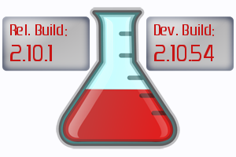

Template:Main
From Essentials
Essentials offers over 100 commands useful on just about every Minecraft server, from kits to mob spawning.
Essentials is the de-facto standard set up for Minecraft servers. From small servers running on on desktops, VPS hosts and dedicated Minecraft services.
Essentials is one of the most popular Bukkit plugins ever made, and runs on everything from small one person home hosted Windows servers, to huge 500+ slot dedicated Linux community servers.
